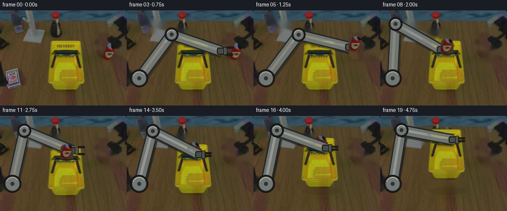
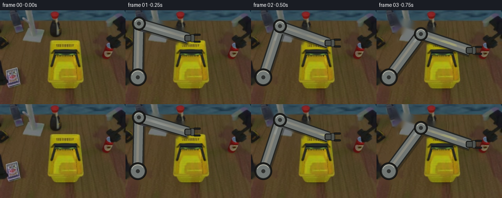

CODING AGENTS AS PIXEL WORLD MODELS
traex/GPT-5.6-Sol · common50_0047
点击播放 · 原生 RGB 像素
逐轮保存的候选
回放视频、检查图与代码变化。
每份候选均可单独播放。实际图片检查记录在下方工具轨迹中。
候选 01播放与检查图
点击播放 · 原生 RGB 像素

展开代码变化
--- 上一保存版本
+++ 本次保存版本
@@ -0,0 +1,156 @@
+from pathlib import Path
+import math
+import numpy as np
+import cv2
+from PIL import Image, ImageDraw, ImageFilter
+import artifact_io
+
+ROOT = Path(__file__).resolve().parent
+W,H = 256,192
+src = np.asarray(Image.open(ROOT/'first_frame.png').convert('RGB'), dtype=np.uint8)
+
+# Masks for the three physical actors in the initial image.
+def poly_mask(points, blur=0):
+ m = Image.new('L',(W,H),0); ImageDraw.Draw(m).polygon(points,fill=255)
+ if blur: m=m.filter(ImageFilter.GaussianBlur(blur))
+ return np.asarray(m)
+
+# The arm at t=0 enters at lower left, bends through the pale assembly at the top,
+# and terminates near (119,55). This clean plate is used only after frame zero.
+arm_m = np.zeros((H,W),np.uint8)
+cv2.line(arm_m,(25,138),(29,25),255,25,cv2.LINE_AA)
+cv2.line(arm_m,(29,25),(120,55),255,25,cv2.LINE_AA)
+cv2.circle(arm_m,(25,138),23,255,-1,cv2.LINE_AA)
+cv2.circle(arm_m,(29,25),20,255,-1,cv2.LINE_AA)
+cv2.circle(arm_m,(118,55),18,255,-1,cv2.LINE_AA)
+# Restrict removal to the visually identified robot areas, preserving more table.
+robot_region = poly_mask([(0,105),(47,105),(47,74),(38,63),(38,0),(127,0),(130,65),(107,72),(55,67),(51,112),(49,165),(0,165)])
+arm_m = cv2.bitwise_and(arm_m, robot_region)
+arm_m = cv2.dilate(arm_m,np.ones((5,5),np.uint8),iterations=1)
+clean_arm = cv2.inpaint(src,arm_m,5,cv2.INPAINT_TELEA)
+
+# Soda can sprite and removal mask. Keep the observed pixels rather than inventing texture.
+can_mask = np.zeros((H,W),np.uint8)
+cv2.rectangle(can_mask,(208,78),(233,108),255,-1)
+cv2.ellipse(can_mask,(220,78),(12,8),0,180,360,255,-1)
+cv2.ellipse(can_mask,(220,108),(12,8),0,0,180,255,-1)
+can_mask = cv2.GaussianBlur(can_mask,(3,3),0.45)
+can_remove = cv2.dilate((can_mask>30).astype(np.uint8)*255,np.ones((7,7),np.uint8),iterations=1)
+clean_can = cv2.inpaint(clean_arm,can_remove,5,cv2.INPAINT_TELEA)
+
+# Basket silhouette, including its dark cavity and black handles.
+basket_mask = poly_mask([(96,60),(170,60),(173,142),(166,157),(157,161),(106,161),(96,153),(92,124)],1)
+basket_remove = cv2.dilate((basket_mask>20).astype(np.uint8)*255,np.ones((5,5),np.uint8),iterations=1)
+clean_all = cv2.inpaint(clean_can,basket_remove,6,cv2.INPAINT_TELEA)
+
+# Alpha compositing a translated set of observed pixels.
+def paste_rgba(base, rgb, alpha, dx=0, dy=0):
+ out=base.astype(np.float32).copy()
+ M=np.float32([[1,0,dx],[0,1,dy]])
+ wr=cv2.warpAffine(rgb,M,(W,H),flags=cv2.INTER_LINEAR,borderMode=cv2.BORDER_CONSTANT,borderValue=(0,0,0)).astype(np.float32)
+ wa=cv2.warpAffine(alpha,M,(W,H),flags=cv2.INTER_LINEAR,borderMode=cv2.BORDER_CONSTANT,borderValue=0).astype(np.float32)/255.0
+ out=out*(1-wa[...,None])+wr*wa[...,None]
+ return np.clip(out,0,255).astype(np.uint8)
+
+# Draw at 4x resolution to retain smooth rigid boundaries in this small image.
+S=4
+def render_arm(base_rgb, endpoint, grip=0.0, mode='free'):
+ im=Image.fromarray(base_rgb).convert('RGBA')
+ ov=Image.new('RGBA',(W*S,H*S),(0,0,0,0)); d=ImageDraw.Draw(ov)
+ B=np.array([25.0,137.0]); T=np.array(endpoint,dtype=float)
+ L1,L2=110.0,105.0
+ v=T-B; dist=float(np.linalg.norm(v)); dist=max(abs(L1-L2)+.1,min(L1+L2-.1,dist)); u=v/(np.linalg.norm(v)+1e-9)
+ a=(L1*L1-L2*L2+dist*dist)/(2*dist); hh=math.sqrt(max(0,L1*L1-a*a))
+ perp=np.array([-u[1],u[0]])
+ e1=B+u*a+perp*hh; e2=B+u*a-perp*hh
+ # Stable upper-elbow branch; this avoids any nonphysical elbow flip.
+ E=e1 if e1[1] < e2[1] else e2
+ def P(p): return tuple(np.rint(p*S).astype(int))
+ def line(a,b,fill,width): d.line([P(a),P(b)],fill=fill,width=int(width*S))
+ # Contact shadow, then dark machined outline, rigid link body, and steel highlight.
+ for A,Z in [(B,E),(E,T)]:
+ line(A+np.array([2,3]),Z+np.array([2,3]),(18,16,13,90),24)
+ line(A,Z,(35,37,35,255),23)
+ line(A,Z,(111,116,113,255),18)
+ line(A+np.array([-1,-1]),Z+np.array([-1,-1]),(153,157,151,190),5)
+ # Anchored pedestal and rotary joints.
+ for C,r in [(B,18),(E,14)]:
+ x,y=P(C); rr=int(r*S)
+ d.ellipse((x-rr,y-rr,x+rr,y+rr),fill=(35,36,34,255),outline=(18,18,17,255),width=2*S)
+ rr2=int((r-4)*S); d.ellipse((x-rr2,y-rr2,x+rr2,y+rr2),fill=(113,119,116,255))
+ rr3=int(4*S); d.ellipse((x-rr3,y-rr3,x+rr3,y+rr3),fill=(48,50,48,255))
+ d.arc((x-rr2,y-rr2,x+rr2,y+rr2),200,325,fill=(182,184,174,220),width=2*S)
+ # Wrist is compact and orientation-stabilized horizontally for manipulation.
+ x,y=T
+ d.rounded_rectangle(((x-8)*S,(y-7)*S,(x+8)*S,(y+7)*S),radius=4*S,
+ fill=(72,76,73,255),outline=(25,26,24,255),width=2*S)
+ # Parallel jaw gripper; its gap visibly closes at grasp events.
+ gap=7.0-4.2*float(grip)
+ jaw=(30,31,29,255); edge=(13,13,12,255)
+ # palm and two non-deforming fingers point to camera-right
+ d.rounded_rectangle(((x+5)*S,(y-8)*S,(x+13)*S,(y+8)*S),radius=2*S,fill=(78,82,78,255),outline=edge,width=S)
+ for sg in (-1,1):
+ yy=y+sg*gap
+ d.rounded_rectangle(((x+11)*S,(yy-2.0)*S,(x+25)*S,(yy+2.0)*S),radius=1.5*S,fill=jaw,outline=edge,width=S)
+ ov=ov.resize((W,H),Image.Resampling.LANCZOS)
+ return np.asarray(Image.alpha_composite(im,ov).convert('RGB'))
+
+# Cubic easing produces high stability at pick/place contacts.
+def ease(t):
+ t=max(0.0,min(1.0,float(t))); return t*t*(3-2*t)
+def lerp(a,b,t):
+ t=ease(t); return tuple(np.array(a)*(1-t)+np.array(b)*t)
+
+# End-effector trajectory. Wrist remains left of the object so jaws surround it.
+EE=[
+ (118,55),(128,57),(158,67),(190,82),(208,92),
+ (193,74),(168,56),(143,62),(122,79), # can centre is wrist + (12,1)
+ (137,58),(147,56),(146,70),(146,82),(146,82),
+ (146,78),(146,72),(146,65),(146,58),(146,52),(146,48)
+]
+# Contact state of rigid parallel fingers.
+GR=[0,0,0,0,.88, 1,1,1,1, 0,0,0,.9,1,1,1,1,1,1,1]
+# Observed can centre starts at (220,93), is carried, then retained in basket.
+CAN_C=[(220,93)]*5+[(205,75),(180,57),(155,63),(134,80)]+[(134,80)]*11
+# Basket lift starts only after can placement and handle acquisition.
+BASK_DY=[0]*14+[-4,-10,-17,-24,-30,-34]
+
+frames=[]
+for i in range(20):
+ if i==0:
+ frames.append(src.copy()); continue
+ dy=BASK_DY[i]
+ # Before a source object moves, leave the exact source pixels untouched.
+ if dy==0:
+ bg=clean_can.copy() if i>=5 else clean_arm.copy()
+ # Restore stationary original basket, which clean_can still contains.
+ else:
+ bg=clean_all.copy()
+ # A subtle grounded shadow separates the lifted basket from the table.
+ sh=np.zeros((H,W),np.uint8)
+ cv2.ellipse(sh,(135,151),(39,8),0,0,360,75,-1,cv2.LINE_AA)
+ a=(sh.astype(float)/255*.25)[...,None]
+ bg=np.clip(bg.astype(float)*(1-a),0,255).astype(np.uint8)
+ bg=paste_rgba(bg,src,basket_mask,0,dy)
+ # Arm is always articulated from the same anchored pedestal.
+ bg=render_arm(bg,EE[i],GR[i])
+ cx,cy=CAN_C[i]
+ if i>=5:
+ # Once inside, the can rises rigidly with the basket.
+ cdy=dy if i>=14 else 0
+ bg=paste_rgba(bg,src,can_mask,int(round(cx-220)),int(round(cy-93+cdy)))
+ # Front wall/handles occlude the lower half of the placed can, proving containment.
+ if i>=8:
+ front=basket_mask.copy()
+ yy=np.arange(H)[:,None]
+ front=np.where(yy>=87+dy,front,0).astype(np.uint8)
+ bg=paste_rgba(bg,src,front,0,dy)
+ # Repaint gripper last at handle contact so its jaws remain legible.
+ if i>=12:
+ bg=render_arm(bg,EE[i],GR[i])
+ frames.append(bg)
+
+frames=np.stack(frames).astype(np.uint8)
+assert frames.shape==(20,192,256,3)
+assert np.array_equal(frames[0],src)
+artifact_io.save(frames,ROOT)
候选 02播放与检查图
点击播放 · 原生 RGB 像素

展开代码变化
--- 上一保存版本 +++ 本次保存版本 @@ -104,14 +104,14 @@ # End-effector trajectory. Wrist remains left of the object so jaws surround it. EE=[ (118,55),(128,57),(158,67),(190,82),(208,92), - (193,74),(168,56),(143,62),(122,79), # can centre is wrist + (12,1) + (193,74),(168,56),(143,62),(110,79), # can centre is wrist + (12,1) (137,58),(147,56),(146,70),(146,82),(146,82), (146,78),(146,72),(146,65),(146,58),(146,52),(146,48) ] # Contact state of rigid parallel fingers. GR=[0,0,0,0,.88, 1,1,1,1, 0,0,0,.9,1,1,1,1,1,1,1] # Observed can centre starts at (220,93), is carried, then retained in basket. -CAN_C=[(220,93)]*5+[(205,75),(180,57),(155,63),(134,80)]+[(134,80)]*11 +CAN_C=[(220,93)]*5+[(205,75),(180,57),(155,63),(122,80)]+[(122,80)]*11 # Basket lift starts only after can placement and handle acquisition. BASK_DY=[0]*14+[-4,-10,-17,-24,-30,-34]
候选 03播放与检查图
可观测工具轨迹
实际执行的命令与返回图片。
命令 1exit 0
/bin/bash -lc "cat GENERATION_RULES.md && printf '\\n---PROMPT---\\n' && cat prompt.txt"
命令 2exit 1
/bin/bash -lc "find . -maxdepth 2 -type f -printf '%p\\n' | sort && printf '\\n--- tools ---\\n' && command -v ffmpeg && command -v python3"
命令 3exit 0
/bin/bash -lc "cat task_spec.json && sed -n '1,240p' artifact_io.py"
命令 4exit 0
/bin/bash -lc "python3 - <<'PY'
from PIL import Image
import numpy as np
im=np.array(Image.open('first_frame.png').convert('RGB'))
print(im.shape,im.dtype, im.min(), im.max())
# color quantization dominant
q=(im//16)*16
u,c=np.unique(q.reshape(-1,3),axis=0,return_counts=True)
for i in np.argsort(c)[-30:][::-1]: print(tuple(u[i]),c[i])
# bounding boxes broad colors
masks={
'red':(im[:,:,0]>100)&(im[:,:,0]>im[:,:,1]*1.35)&(im[:,:,0]>im[:,:,2]*1.3),
'yellow':(im[:,:,0]>100)&(im[:,:,1]>70)&(im[:,:,0]>im[:,:,2]*1.5)&(im[:,:,1]>im[:,:,2]*1.4),
'black':np.max(im,2)<55,
'blue':(im[:,:,2]>im[:,:,0]*1.3)&(im[:,:,2]>im[:,:,1]*1.15)&(im[:,:,2]>70),
}
for n,m in masks.items():
ys,xs=np.where(m); print(n,len(xs), (xs.min(),ys.min(),xs.max(),ys.max()) if len(xs) else None)
# row and col hist peaks
print(' x', sorted(enumerate(np.bincount(xs,minlength=256)),key=lambda z:z[1],reverse=True)[:10])
print(' y', sorted(enumerate(np.bincount(ys,minlength=192)),key=lambda z:z[1],reverse=True)[:10])
PY"命令 5exit 2
/bin/bash -lc "cat > /tmp/an.py <<'PY'
from PIL import Image
import numpy as np
from scipy.ndimage import label
im=np.array(Image.open('first_frame.png').convert('RGB')).astype(float)
r,g,b=im.transpose(2,0,1)
mx=im.max(2); mn=im.min(2)
masks={
'red':(r>80)&(r>g*1.3)&(r>b*1.3)&((r-g)>20),
'yellow':(r>100)&(g>80)&(b<70)&(r>b*1.8)&(g>b*1.6),
'dark':mx<45,
'gray':(mx-mn<15)&(mx>60),
'cyan':(b>60)&(g>50)&(r<g*.9)&(r<b*.85),
}
for name,m in masks.items():
l,n=label(m)
comps=[]
for i in range(1,n+1):
yy,xx=np.where(l==i); z=len(xx)
if z>=4: comps.append((z,xx.min(),yy.min(),xx.max(),yy.max(), im[yy,xx].mean(0).round(1).tolist()))
print('\\n',name,'total',m.sum(),'comps')
for x in sorted(comps,reverse=True)[:30]:print(x)
# ascii average blocks and classify via nearest predefined protos
# kmeans colors + per coarse cells dominant cluster
from sklearn.cluster import KMeans
pix=im.reshape(-1,3)
km=KMeans(12,random_state=2,n_init=5).fit(pix[::4])
cen=km.cluster_centers_
lab=km.predict(pix).reshape(192,256)
order=np.argsort(cen.mean(1)); chars=' .,:;irsXA25hMG#'
print('centers')
for j in range(12): print(j,cen[j])
# region map 4x4 modes
for y in range(0,192,4):
s=''
for x in range(0,256,4):
ids,c=np.unique(lab[y:y+4,x:x+4],return_counts=True); j=ids[c.argmax()]
# hand map color-oriented char
R,G,B=cen[j]
if R>100 and G>80 and B<50:ch='Y'
elif R>G*1.25 and R>B*1.25:ch='R'
elif max(R,G,B)<45:ch='#'
elif B>R*1.2:ch='b'
elif max(R,G,B)-min(R,G,B)<18 and R>80:ch='W'
elif G>B*1.3:ch='o'
else:ch='.'
s+=ch
print(s)
PY
python3 /tmp/an.py"命令 6exit 0
/bin/bash -lc "cat > .tmp/an.py <<'PY'
from PIL import Image
import numpy as np
from scipy.ndimage import label
im=np.array(Image.open('first_frame.png').convert('RGB')).astype(float)
r,g,b=im.transpose(2,0,1); mx=im.max(2); mn=im.min(2)
masks={'red':(r>80)&(r>g*1.3)&(r>b*1.3)&((r-g)>20),'yellow':(r>100)&(g>80)&(b<70)&(r>b*1.8)&(g>b*1.6),'dark':mx<45,'gray':(mx-mn<15)&(mx>60),'cyan':(b>60)&(g>50)&(r<g*.9)&(r<b*.85)}
for name,m in masks.items():
l,n=label(m); comps=[]
for i in range(1,n+1):
yy,xx=np.where(l==i); z=len(xx)
if z>=4: comps.append((z,xx.min(),yy.min(),xx.max(),yy.max(), im[yy,xx].mean(0).round(1).tolist()))
print('\\n',name,'total',m.sum(),'comps')
for x in sorted(comps,reverse=True)[:30]:print(x)
from sklearn.cluster import KMeans
pix=im.reshape(-1,3); km=KMeans(12,random_state=2,n_init=5).fit(pix[::4]); cen=km.cluster_centers_; lab=km.predict(pix).reshape(192,256)
print('centers'); [print(j,cen[j]) for j in range(12)]
for y in range(0,192,4):
s=''
for x in range(0,256,4):
ids,c=np.unique(lab[y:y+4,x:x+4],return_counts=True); j=ids[c.argmax()]; R,G,B=cen[j]
if R>100 and G>80 and B<50:ch='Y'
elif R>G*1.25 and R>B*1.25:ch='R'
elif max(R,G,B)<45:ch='#'
elif B>R*1.2:ch='b'
elif max(R,G,B)-min(R,G,B)<18 and R>80:ch='W'
elif G>B*1.3:ch='o'
else:ch='.'
s+=ch
print(s)
PY
python3 .tmp/an.py"命令 7exit 0
/bin/bash -lc "python3 - <<'PY'
from PIL import Image
import numpy as np
im=np.array(Image.open('first_frame.png').convert('RGB'))
def c(p):
r,g,b=map(int,p)
if max(p)<45:return '#'
if r>100 and r>g*1.5 and r>b*1.5:return 'R'
if r>85 and r>g*1.2 and r>b*1.2:return 'r'
if r>110 and g>90 and b<50:return 'Y'
if max(p)-min(p)<18 and max(p)>90:return 'W'
if b>r*1.25 and b>g*1.08:return 'b'
if max(p)>130:return '+'
if r>70 and g<60:return 'd'
return '.'
for x0,x1,y0,y1 in [(195,245,55,125),(85,180,50,165),(35,130,0,70),(0,60,105,165)]:
print('\\nREG',x0,x1,y0,y1)
for y in range(y0,y1,2):
print(f'{y:3}', ''.join(c(im[y:y+2,x:x+2].mean((0,1))) for x in range(x0,x1,2)))
PY"命令 8exit 0
/bin/bash -lc "python3 - <<'PY'
try:
import cv2; print('cv2',cv2.__version__)
except Exception as e: print(e)
PY"命令 9exit 0
/bin/bash -lc "cat > generate.py <<'PY'
from pathlib import Path
import math
import numpy as np
import cv2
from PIL import Image, ImageDraw, ImageFilter
import artifact_io
ROOT = Path(__file__).resolve().parent
W,H = 256,192
src = np.asarray(Image.open(ROOT/'first_frame.png').convert('RGB'), dtype=np.uint8)
# Masks for the three physical actors in the initial image.
def poly_mask(points, blur=0):
m = Image.new('L',(W,H),0); ImageDraw.Draw(m).polygon(points,fill=255)
if blur: m=m.filter(ImageFilter.GaussianBlur(blur))
return np.asarray(m)
# The arm at t=0 enters at lower left, bends through the pale assembly at the top,
# and terminates near (119,55). This clean plate is used only after frame zero.
arm_m = np.zeros((H,W),np.uint8)
cv2.line(arm_m,(25,138),(29,25),255,25,cv2.LINE_AA)
cv2.line(arm_m,(29,25),(120,55),255,25,cv2.LINE_AA)
cv2.circle(arm_m,(25,138),23,255,-1,cv2.LINE_AA)
cv2.circle(arm_m,(29,25),20,255,-1,cv2.LINE_AA)
cv2.circle(arm_m,(118,55),18,255,-1,cv2.LINE_AA)
# Restrict removal to the visually identified robot areas, preserving more table.
robot_region = poly_mask([(0,105),(47,105),(47,74),(38,63),(38,0),(127,0),(130,65),(107,72),(55,67),(51,112),(49,165),(0,165)])
arm_m = cv2.bitwise_and(arm_m, robot_region)
arm_m = cv2.dilate(arm_m,np.ones((5,5),np.uint8),iterations=1)
clean_arm = cv2.inpaint(src,arm_m,5,cv2.INPAINT_TELEA)
# Soda can sprite and removal mask. Keep the observed pixels rather than inventing texture.
can_mask = np.zeros((H,W),np.uint8)
cv2.rectangle(can_mask,(208,78),(233,108),255,-1)
cv2.ellipse(can_mask,(220,78),(12,8),0,180,360,255,-1)
cv2.ellipse(can_mask,(220,108),(12,8),0,0,180,255,-1)
can_mask = cv2.GaussianBlur(can_mask,(3,3),0.45)
can_remove = cv2.dilate((can_mask>30).astype(np.uint8)*255,np.ones((7,7),np.uint8),iterations=1)
clean_can = cv2.inpaint(clean_arm,can_remove,5,cv2.INPAINT_TELEA)
# Basket silhouette, including its dark cavity and black handles.
basket_mask = poly_mask([(96,60),(170,60),(173,142),(166,157),(157,161),(106,161),(96,153),(92,124)],1)
basket_remove = cv2.dilate((basket_mask>20).astype(np.uint8)*255,np.ones((5,5),np.uint8),iterations=1)
clean_all = cv2.inpaint(clean_can,basket_remove,6,cv2.INPAINT_TELEA)
# Alpha compositing a translated set of observed pixels.
def paste_rgba(base, rgb, alpha, dx=0, dy=0):
out=base.astype(np.float32).copy()
M=np.float32([[1,0,dx],[0,1,dy]])
wr=cv2.warpAffine(rgb,M,(W,H),flags=cv2.INTER_LINEAR,borderMode=cv2.BORDER_CONSTANT,borderValue=(0,0,0)).astype(np.float32)
wa=cv2.warpAffine(alpha,M,(W,H),flags=cv2.INTER_LINEAR,borderMode=cv2.BORDER_CONSTANT,borderValue=0).astype(np.float32)/255.0
out=out*(1-wa[...,None])+wr*wa[...,None]
return np.clip(out,0,255).astype(np.uint8)
# Draw at 4x resolution to retain smooth rigid boundaries in this small image.
S=4
def render_arm(base_rgb, endpoint, grip=0.0, mode='free'):
im=Image.fromarray(base_rgb).convert('RGBA')
ov=Image.new('RGBA',(W*S,H*S),(0,0,0,0)); d=ImageDraw.Draw(ov)
B=np.array([25.0,137.0]); T=np.array(endpoint,dtype=float)
L1,L2=110.0,105.0
v=T-B; dist=float(np.linalg.norm(v)); dist=max(abs(L1-L2)+.1,min(L1+L2-.1,dist)); u=v/(np.linalg.norm(v)+1e-9)
a=(L1*L1-L2*L2+dist*dist)/(2*dist); hh=math.sqrt(max(0,L1*L1-a*a))
perp=np.array([-u[1],u[0]])
e1=B+u*a+perp*hh; e2=B+u*a-perp*hh
# Stable upper-elbow branch; this avoids any nonphysical elbow flip.
E=e1 if e1[1] < e2[1] else e2
def P(p): return tuple(np.rint(p*S).astype(int))
def line(a,b,fill,width): d.line([P(a),P(b)],fill=fill,width=int(width*S))
# Contact shadow, then dark machined outline, rigid link body, and steel highlight.
for A,Z in [(B,E),(E,T)]:
line(A+np.array([2,3]),Z+np.array([2,3]),(18,16,13,90),24)
line(A,Z,(35,37,35,255),23)
line(A,Z,(111,116,113,255),18)
line(A+np.array([-1,-1]),Z+np.array([-1,-1]),(153,157,151,190),5)
# Anchored pedestal and rotary joints.
for C,r in [(B,18),(E,14)]:
x,y=P(C); rr=int(r*S)
d.ellipse((x-rr,y-rr,x+rr,y+rr),fill=(35,36,34,255),outline=(18,18,17,255),width=2*S)
rr2=int((r-4)*S); d.ellipse((x-rr2,y-rr2,x+rr2,y+rr2),fill=(113,119,116,255))
rr3=int(4*S); d.ellipse((x-rr3,y-rr3,x+rr3,y+rr3),fill=(48,50,48,255))
d.arc((x-rr2,y-rr2,x+rr2,y+rr2),200,325,fill=(182,184,174,220),width=2*S)
# Wrist is compact and orientation-stabilized horizontally for manipulation.
x,y=T
d.rounded_rectangle(((x-8)*S,(y-7)*S,(x+8)*S,(y+7)*S),radius=4*S,
fill=(72,76,73,255),outline=(25,26,24,255),width=2*S)
# Parallel jaw gripper; its gap visibly closes at grasp events.
gap=7.0-4.2*float(grip)
jaw=(30,31,29,255); edge=(13,13,12,255)
# palm and two non-deforming fingers point to camera-right
d.rounded_rectangle(((x+5)*S,(y-8)*S,(x+13)*S,(y+8)*S),radius=2*S,fill=(78,82,78,255),outline=edge,width=S)
for sg in (-1,1):
yy=y+sg*gap
d.rounded_rectangle(((x+11)*S,(yy-2.0)*S,(x+25)*S,(yy+2.0)*S),radius=1.5*S,fill=jaw,outline=edge,width=S)
ov=ov.resize((W,H),Image.Resampling.LANCZOS)
return np.asarray(Image.alpha_composite(im,ov).convert('RGB'))
# Cubic easing produces high stability at pick/place contacts.
def ease(t):
t=max(0.0,min(1.0,float(t))); return t*t*(3-2*t)
def lerp(a,b,t):
t=ease(t); return tuple(np.array(a)*(1-t)+np.array(b)*t)
# End-effector trajectory. Wrist remains left of the object so jaws surround it.
EE=[
(118,55),(128,57),(158,67),(190,82),(208,92),
(193,74),(168,56),(143,62),(122,79), # can centre is wrist + (12,1)
(137,58),(147,56),(146,70),(146,82),(146,82),
(146,78),(146,72),(146,65),(146,58),(146,52),(146,48)
]
# Contact state of rigid parallel fingers.
GR=[0,0,0,0,.88, 1,1,1,1, 0,0,0,.9,1,1,1,1,1,1,1]
# Observed can centre starts at (220,93), is carried, then retained in basket.
CAN_C=[(220,93)]*5+[(205,75),(180,57),(155,63),(134,80)]+[(134,80)]*11
# Basket lift starts only after can placement and handle acquisition.
BASK_DY=[0]*14+[-4,-10,-17,-24,-30,-34]
frames=[]
for i in range(20):
if i==0:
frames.append(src.copy()); continue
dy=BASK_DY[i]
# Before a source object moves, leave the exact source pixels untouched.
if dy==0:
bg=clean_can.copy() if i>=5 else clean_arm.copy()
# Restore stationary original basket, which clean_can still contains.
else:
bg=clean_all.copy()
# A subtle grounded shadow separates the lifted basket from the table.
sh=np.zeros((H,W),np.uint8)
cv2.ellipse(sh,(135,151),(39,8),0,0,360,75,-1,cv2.LINE_AA)
a=(sh.astype(float)/255*.25)[...,None]
bg=np.clip(bg.astype(float)*(1-a),0,255).astype(np.uint8)
bg=paste_rgba(bg,src,basket_mask,0,dy)
# Arm is always articulated from the same anchored pedestal.
bg=render_arm(bg,EE[i],GR[i])
cx,cy=CAN_C[i]
if i>=5:
# Once inside, the can rises rigidly with the basket.
cdy=dy if i>=14 else 0
bg=paste_rgba(bg,src,can_mask,int(round(cx-220)),int(round(cy-93+cdy)))
# Front wall/handles occlude the lower half of the placed can, proving containment.
if i>=8:
front=basket_mask.copy()
yy=np.arange(H)[:,None]
front=np.where(yy>=87+dy,front,0).astype(np.uint8)
bg=paste_rgba(bg,src,front,0,dy)
# Repaint gripper last at handle contact so its jaws remain legible.
if i>=12:
bg=render_arm(bg,EE[i],GR[i])
frames.append(bg)
frames=np.stack(frames).astype(np.uint8)
assert frames.shape==(20,192,256,3)
assert np.array_equal(frames[0],src)
artifact_io.save(frames,ROOT)
PY
python3 generate.py
python3 - <<'PY'
from PIL import Image
import numpy as np
f=np.stack([np.asarray(Image.open(f'frames/{i:02}.png')) for i in range(20)])
print('shape',f.shape,f.dtype,'frame0 exact',np.array_equal(f[0],np.asarray(Image.open('first_frame.png').convert('RGB'))))
for i in range(1,20):
d=np.abs(f[i].astype(int)-f[i-1].astype(int)); print(i, int((d.max(2)>3).sum()),round(float(d.mean()),2))
PY"命令 10exit 0
/bin/bash -lc "python3 - <<'PY'
from PIL import Image
import numpy as np
from scipy.ndimage import label
for i in [0,1,3,4,5,6,7,8,9,12,13,14,16,19]:
a=np.array(Image.open(f'frames/{i:02}.png')).astype(float);r,g,b=a.transpose(2,0,1)
# restrict true soda-like red pixels (avoids wooden table)
m=(r>75)&(r>g*1.5)&(r>b*1.35)&((r-g)>25)
l,n=label(m); C=[]
for k in range(1,n+1):
yy,xx=np.where(l==k)
if len(xx)>15:C.append((len(xx),round(xx.mean(),1),round(yy.mean(),1),(xx.min(),yy.min(),xx.max(),yy.max())))
y=(r>105)&(g>85)&(b<55)&(r>b*1.8)&(g>b*1.5)
yy,xx=np.where(y)
print(i,'red',sorted(C,reverse=True)[:3],'yellow bbox',(xx.min(),yy.min(),xx.max(),yy.max()),'Y',len(xx))
PY
ls -lh pixels.npz index.html inspection.png transition_check.png generate.py"命令 11exit 0
/bin/bash -lc "python3 generate.py && python3 - <<'PY'
from PIL import Image
import numpy as np
src=np.asarray(Image.open('first_frame.png').convert('RGB'))
arr=np.load('pixels.npz')['pixels']
print(arr.shape,arr.dtype,'frame0 exact',np.array_equal(arr[:,:,0],(src[:,:,0].astype(np.uint32)<<16)|(src[:,:,1].astype(np.uint32)<<8)|src[:,:,2]))
print('all outputs',all(__import__('pathlib').Path(x).exists() for x in ['pixels.npz','index.html','inspection.png','transition_check.png']))
PY"保存候选 3 份；完成命令 11 次；可验证图片返回 0 张。原始 API 响应与完整日志保留在本地。